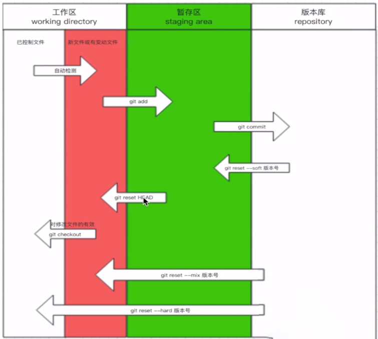
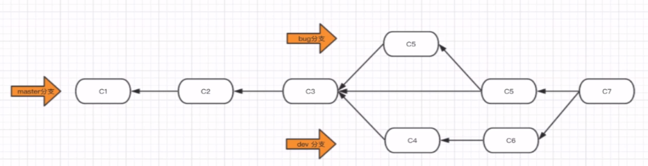
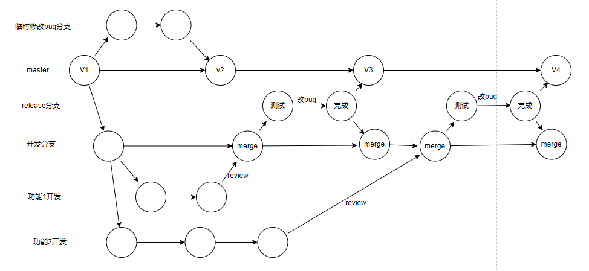

git是什么
Git是分布式版本控制软件
仓库存放所有的版本，本地也存放所有的版本，提高系统的健壮性。集中式版本控制软件是一个服务端仓库存放所有版本，本地只存放一个版本
Git安装
Windows：
- 下载安装包，默认安装
- git --version：查看git版本
linux： yum install git
Git配置
如果没有配置，commit时会报错
配置命令：配置用户名和邮箱
git config --global user.email "邮箱"
git config --global user.name "名字"
Git知识
Git三大区域
- 工作区： 两种文件状态：已管理文件（生成了版本）和新增/修改文件（红色）
- 暂存区：
通过
git add添加的文件都在暂存区（绿色），可回滚、可提交版本 - 版本库：
通过
git commit提交的版本
Git使用
基础
版本控制（Git管理文件夹）步骤：
- 进入要管理的文件夹
- 初始化：
git init 管理：
git status：检测文件状态git add 文件/.：管理文件或全部文件，管理起来的文件会变绿三种状态的变化：
- 红色：新增的文件/修改了原老文件
- 绿色：通过
git add命令之后被git管理起来的文件 - 查询不到：通过
git commit生成了版本
- 生成版本：
git commit -m "描述信息"：生成一个版本 - 查看版本：
git log。git log --graph：以流程线图显示版本记录git log --graph --pretty=format:"%h %s"：简洁显示，只显示哈希值和记录字符串
回滚
回滚到以前的版本到工作区(本地-管理状态)：git reset --hard 版本号。版本号为每次commit时生成的，通过git log命令查看
向前滚动版本(将版本库的某个版本替换成工作区)：git reset --hard 版本号。版本号通过git reflog命令查看
将版本库某个版本回滚到暂存区：git reset --soft 版本号
从暂存区回滚到工作区（绿色→未管理红色）：git reset HEAD
从版本库回滚到工作区(未管理状态红色)：git reset --mix 版本号
将改动的文件改回被管理时状态（未管理状态红色→干净状态）：git checkout -- 文件

分支
开发新功能时可以另开新分支开发
- 查看所处分支：
git branch - 创建分支：
git branch 分支名 - 切换分支：
git checkout 分支名。git checkout -b 分支：从当前分支创建一个分支并切换 - 合并分支：先切换会主分支，使用命令
git merge 分支名合并分支 - 删除分支：
git branch -d 分支名
紧急修复线上bug的思路：另开一个新分支去修复主线上的bug，不影响别的分支上的开发功能，完成修复之后合并到主分支(master)。合并新功能时会有冲突，新功能分支上的bug没有被修复，需要去手动修改文件，之后再add和commit 
工作流
初始项目开始后第一个版本后应该创建一个dev分支，在dev分支上做开发。master分支上是稳定版本，等dev上的开发完成或测试稳定后再合并到master。（注意：合并到主分支后再返回dev分支开发时要合并主分支(如果主分支是最新的)，git merge master合并之后使dev分支也是在新功能基础上继续开发
GitHub
代码托管仓库
绑定远程仓库前，现在本地生成ssh的key进行远程仓库验证(绑定当前电脑)
ssh-keygen -t rsa # 一路回车后再/root/.ssh/下生成文件密钥
将生成的公钥id_rsa.pub 绑定github
使用
创建仓库（不勾选readme，创建一个空仓库），如果本地没有仓库，按以下操作：
echo "# tools" >> README.md # 创建一个readme.md文件，
git init # 初始化
git add README.md # 使用git管理
git commit -m "first commit" # 提交本地版本库
git remote add origin git@github.com:tinistyle/tools.git # 绑定远程仓库，origin表示远程仓库的别名
git push -u origin master # 推送
本地已经有仓库时：
git remote add origin git@github.com:tinistyle/tools.git # 绑定远程仓库
git push -u origin master # 推送
推送
git push -u origin 分支
拉取
从远程仓库拉取代码到本地
git clone 远程仓库地址：拉取下来的分支都有，但是不会显示，可以直接切换分支
远程仓库命令小结
- 给远程仓库起别名：
git remote add 别名 远程仓库地址 - 给远程仓库推送代码（从本地版本库推送到远程仓库）：
git push -u 远程仓库别名 分支。可以不要-u - 克隆远程仓库代码：
git clone 远程仓库地址（内部已实现git remote add origin 地址）。注意：克隆下来的代码默认所在的分支是在master - 更新本地仓库代码：
git pull 别名 分支（拉取远程仓库的代码更新本地工作区）常用 - 更新本地版本库代码：
git fetch 别名 分支（拉取远程仓库的代码更新本地版本库）不常用 - 从本地版本库合并到本地工作区：
git merge 别名/分支或git rebase 别名/分支（必须有/，表示是远程仓库的）
多地开发流程：（例：公司-家）
- 公司开发，注意分支合并master保持开发分支最新处开始，完成后推送分支到远程仓库
- 回家后，克隆远程仓库到本地，默认在master，注意切换分支后开发。完成后提交到远程仓库
- 到公司，更新本地仓库分支，继续开发，再推送到远程仓库
- 回家后，更新本地仓库分支。继续开发，再推送到远程仓库
- 循环往复
- 开发完毕：合并分支到master，推送master分支和开发分支到远程仓库（可以在开发分支也把master合并了）
rebase
变基，使git记录简洁
使用场景：
- 合并多个提交记录：注意，尽量不要合并已提交到远程仓库的记录
git rebase -i 某个版本号：合并从当前commit到某个版本号之间的所有记录git rebase -i HEAD~数量数字：合并从当前commit之前的多少个记录。会弹出提示，将后面的记录的pick改成s就可以（表示将下面的记录合并到上面的记录中）。
- 将分支的每个版本合并到主分支上。将多个分支上的提交记录合并到一条记录线上
- 先在分支上将主分支rebase到dev分支上
git rebase master - 回到主分支合并开发分支：
git merge dev
- 先在分支上将主分支rebase到dev分支上
- pull有冲突时需要合并，就会产生分叉，使用fetch+rebase就可以不产生分叉
git fetch 远程仓库git rebase 远程别名/分支
注意：在rebase过程中可能会产生冲突，在解决冲突之后，会提示一些命令如add等，最后再继续rebase的时候使用：git rebase --continue命令继续进行
beyond compare
快速解决冲突的软件
使用：
- 安装
- 在git中配置
git config --local merge.tool bc3 # --local表示改配置仅对当前项目(管理的文件夹)有效 git config --local mergetool.path 'D:\Program Files\Beyond Compare 4' # 配置软件安装的路径 git config --local mergetool.keepBackip false # 配置合并时是否保留备份 - 应用beyond compare解决冲突：
git mergetool
协同开发
gitflow流程 
GitHub组织
创建组织，并在组织中创建仓库，组织可以邀请成员，仓库也可以邀请。组织和仓库中也可以对权限进行设置
版本管理
使用tag进行版本管理，在commit之后使用tag命令给此次提交打标签，标记为一个正式版本
git tag -a 版本名 -m "备注信息"：打标记git push origin --tags：推送到远程仓库，之后再releases会有发布版本
code review
github的review： 在仓库设置中，branchs中选择一个分支，并为当前分支添加规则，勾选合并前拉取审阅请求。成员代码提交完毕之后，可以发起合并请求
成员在new null request中选择合并分支提交给审核者(可以指定)，审核者会收到pull request的请求，可以在网站上上查看，完成后可以直接merge，也可以拉取到本地查看，之后再推送上
给开源项目贡献代码
- fork源代码，将项目拷贝到自己的仓库中
- 在自己的仓库修bug或二次开发
- 在自己仓库中给源代码的作者提交修复bug的申请（pull request）
补充
配置
项目配置文件：项目/.git/config。只在当前项目生效。优先级最高
git config --local user.name 'xxx'
git config --local user.emall 'xx@xx.com'
全局配置文件：~/.gitconfig。对全局生效
git config --global user.name 'xxx'
git config --global user.emall 'xx@xx.com'
系统配置文件：/etc/.gitconfig。需要root权限
git config --system user.name 'xxx'
git config --system user.emall 'xx@xx.com'
应用场景：
- 用户配置
- 配置插件：如mergetool
- remote 仓库地址。默认添加在本地配置文件中（--local）
免密登陆
以前版本的git每次push都需要输入密码
实现免密登陆：
- url中体现
原来的地址：https://仓库地址URL 修改的地址：https://用户名:密码@仓库地址URL git remote add origin https://用户名:密码@github.com/tinistyle/tools.git - 通过ssh实现
- 生成公钥和私钥：
ssh-keygen。默认放在~/.ssh目录下，id_rsa.pub是公钥，is_rsa私钥 - 拷贝公钥内容，并设置到远程仓库中
- 在Git本地中配置ssh地址：
git remote add origin git@xxxxxx
- 生成公钥和私钥：
- git自动管理凭证（现在才有）
git 忽略文件
在项目文件夹中创建.gitignore文件，在文件中天上需要忽略的文件名
a.h
!b.h # 除了这个文件以外都忽略
*.h # 忽略.h类型的文件
.gitignore # 忽略文件本身
dir/ # 忽略dir文件夹
*.py[c|b|d] # 忽略.py文件以及.pyc/.pyb/.pyd类型的文件
更多参考：https://github.com/github/gitignore。提供了很多语言的忽略文件类型
任务管理
issues：文档或任务管理，提问讨论等（code旁边），可以将问题指派具体人，可以为问题打标签
wiki：类似百科的文档，项目的说明
补充命令
git diff filename # 查看文件相对于暂存区改动了哪些内容，add提交之后就看不到
git diff --cached filename # 暂存区文件与本地仓库文件对比
git rm --cached filename # 将文件从暂存区移回工作目录，变回未跟踪状态
git rm filename # 同时从本地目录和暂存区删除文件 -f 不提示
git log --oneline # 简写查看所有commit
git log --oneline --decorate # 查看所有分支的信息
git log -p # 详情查看，包括内容的变动
git log -n # n表示一个数字，查看最近的几条提交信息
git checkout -- filename # 用暂存区的文件覆盖本地文件，本地文件和暂存区一样，本地仓库不变
git reset HEAD filename # 用本地仓库的文件覆盖暂存区文件，本地仓库与暂存区一样，本地文件不变
git reset --hard commitID # 回退到某一次的commit
git reflog # 所有的commit的历史记录
git tag # 查看标签
git tag -a v1.0 # 给最后一次的commit打标签，需要输入备注信息
git tag -a v2.0 commitID # 给某一次的commit打标签
git show 标签名 # 查看当前标签对应的commit的内容
git reset --hard 标签名 # 回退到某次的commit
git tag -d 标签名 # 删除标签